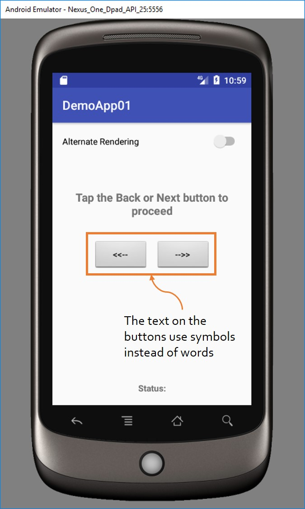

Speech Based Accessibility - Simple
Introduction
If a developer builds/designs a screen with usability in mind, the meaning/purpose of the user interface (UI) elements displayed on the screen are usually straightforward and do not require an explanation. However, in order to support users that are either blind or having limited/low vision, developers need to associate the UI elements with descriptive text so that the user understands the purpose of the UI element and how to interact with it. Almost all modern smartphone and tablet operating systems provide an accessibility service that is able to convert text to speech and automatically announce/speak the textual content associated with the UI element when the user touches the UI element.
This activity introduces 'contentDescription', Android's speech-based accessibility feature for UI elements. Using this feature, developers are able to associate descriptive text with the UI elements on the screen. The associated descriptive text is read aloud by a speech-based accessibility service, like TalkBalk, when the user touches the UI element displayed on the device screen.
The activity involves associating appropriate text with the 'contentDescription' property of each UI element on the screen. Setting a value for the 'contentDescription' property is straightforward and can be done by either selecting the UI element and then entering the textual description using the property pane or by manually updating the layout XML.
As shown in the below image, the text on the buttons are in the form of symbols. Although the purpose of the
buttons can be understood by a user with normal vision, a blind or low/limited vision user will not be able to
comprehend the meanings of the button text. By adding a descriptive text using the 'contentDescription' property
of each button, the button can still retain the symbols as text, but still support the needs of vision impaired
users.

Activity
Download the activity here.
The non-accessible version of this app is located here.
The accessible version of this app is located here.
More Resources
1. Get started on Android with TalkBack2. Google TalkBack app
3. 'contentDescription' property documentation